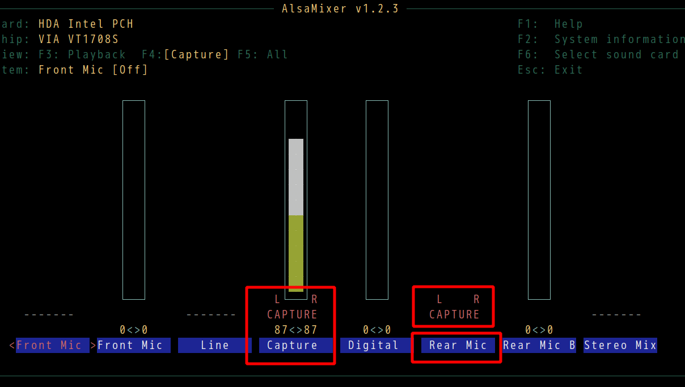

Linux audio input configuration
Run sudo alsamixer and press "F4" to choose audio input.
Make sure the right "Rear Mic" and "Capture" are enabled, 
Run alsamixer and check "pulseaudio" configuration in the same way.
Then test audio,
arecord --duration=5 --format=dat test-mic.wav && aplay test-mic.wav